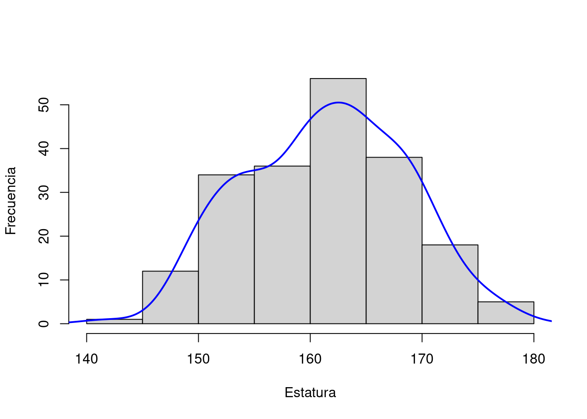
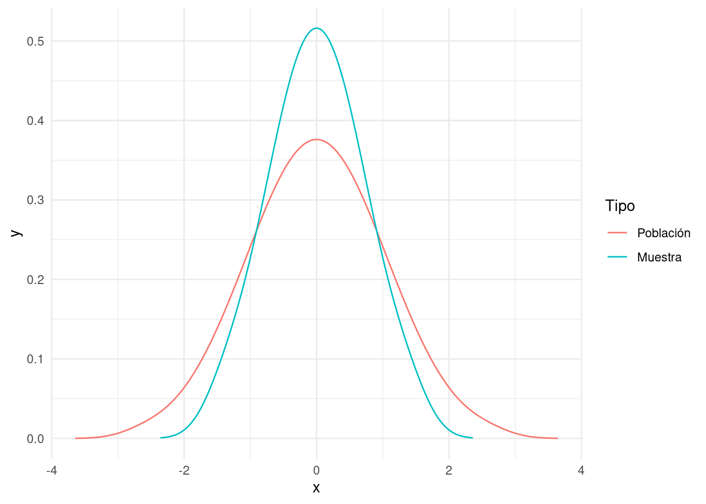

Hemos visto que si trabajamos con poblaciones que son potencialmente infinitas o muy grandes usamos muestras para nuestro trabajo cuantitativo. Las medidas que calculamos en base a estas muestras son estimativos de los parámetros de la población. Si tenemos una muestra de estatura de argentinas entre 19 y 49 años de edad, como la que vimos en el ejemplo 4.1, no sabemos con certeza cuál es la media de la población. La estimamos en base a una muestra. Con ello no podemos afirmar que la media es la misma para la población, de hecho ignoramos cuál es la media de la población. Lo que sí podemos calcular un intervalo de valores dentro de los cuales tenemos cierta confianza de que nuestro valor estimativo sea correcto para la población.
En este capítulo desarrollaremos las técnicas que se utilizan para arribar a estos intervalos de confianza y calcular un margen de error.
5.1 Distribución muestral
Si suponemos que la estatura promedio de las argentinas entre 19 y 49 años es de 161 centímetros con una desviación estándar de 6,99, estos serían los parámetros de la población. Si sacamos cinco muestras aleatorias de veinte observaciones de esta población van a arrojar resultados distintos a estos valores. Algunas muestras van a tener una media por arriba de la media real y otras van a tener una media por debajo.
Ejemplo 5.1 (Distribucion de muestras)

Figura 5.1: Cinco Muestras de 20 obseraciones
Como lo podemos observar en la figura Figura 5.1 la distribución de las muestras es simétrica y normal. La media de nuestras muestras es 161,42; ligeramente por arriba de la media real, y la desviación estándar es de 6,17; más de medio centímetro por debajo de la desviación estándar de la población. La distribución muestral tiene algunas propiedades que son útiles para nuestro trabajo estadístico:
Se aproxima a una distribución normal. Esto se conoce como el teorema del límite central.
La media de la distribución es igual (o casi igual) a la media de la población.
La dispersión es menor a la de la población general.
El número (3) de la lista tiene su lógica ya que en una muestra aleatoria un valor frecuente tiene más probabilidad de ser seleccionada que un valor extremo. La diferencia entre curva normal de la población y la curva de la distribución muestral está ilustrada en la figura 5.2.

Figura 5.2: Distribución de la población y la muestra
5.2 El error estándar y su interpretación
La variabilidad de las medias muestrales se puede medir por su desviación estándar. Esta medida se conoce como el error estándar y tiende a disminuir cuando aumenta el tamaño de la(s) muestra(s).
Definición 5.1 (Error estandar) \[
SE = {\sigma\over{\sqrt{N}}}
\]
si conocemos la desviación estándar de la población, y
\[
SE = {s\over{\sqrt{N}}}
\]
si usamos la desviación estándar de la muestra.
donde:
SE: el error estándar (por sus siglas en inglés «Standard Error»)
\(\sigma\): la desviación estándar de la población
s: desviación estándar de la muestra
N: número de observaciones de la muestra
Nótese que el error estándar no disminuye en relación directamente proporcional con el tamaño de la muestra. Ya que tomamos la raíz cuadrada de N, es necesario cuadruplicar el tamaño de la muestra para reducir el error estándar a la mitad.
5.2.1 Intervalos de confianza
Volvemos a nuestro ejemplo de la estatura de las argentinas entre 19 y 49 en 2007. Si sacamos una muestra aleatoria de esta población de tan solo 30 observaciones. de manera que:
podemos calcular la media y la desviación estándar de la muestra. Obtenemos \(\bar{x}=160,94\) y s = 6,89 respectivamente. Con esto podemos calcular el error estándar:
\[
SE = {s\over{\sqrt{N}}} = {6,89\over{\sqrt{30}}} = {s\over{5,477}} = 1,257
\] Ahora podemos estimar que la media de la población es de 160,94 \(\pm\) 1,257. Hemos reportado muestra estimación con un margen de error. Pero ¿cómo se interpreta este número?
Sea \(\mu\) la media real –por convención se usa la letra griega \(\mu\) que corresponde a m para la media de la población. La desviación de la media de la muestra entonces es de \(161,94 - \mu\). Podemos normalizar esta variable por división con la desviación estándar de la muestra:
\[
z = {161,94 - \mu\over1,257}
\]
Recordemos que se usa z para la variable normalizada. Para muestras desde más o menos 30 observaciones, z tiene una distribución normal, con lo cual nos podemos valer de la regla empírica y mirar la figura 4.5 para darnos cuenta qué tan probable es que nuestro valor caiga dentro o fuera de los rangos esperados. El error estándar es, entonces, el rango de valores que caen dentro de una desviación estándar en la curva normal del error, es decir que hay un 68% de probabilidad de que el valor real esté dentro del rango reportado.
Podemos valernos de esta información para calcular rangos que nos den más confianza en nuestra estimación. La regla empírica dice que el 95% de las observaciones se encuentran entre dos desviaciones estándar de la media. Si se expresa con un poco más de precisión es de 1,96. Este número mágico o valor crítico de usa mucho en los textos con análisis cuantitativo ya que se puede demostrar matemáticamente que:
\[
\text{media de la muestra} \pm(1,96\times{SE})
\] es un estimado de la media de la población con un 95% de confianza.
De la misma manera tenemos:
\[
\text{media de la muestra} \pm(2,58\times{SE})
\]
que nos da un rango con 99% de confianza.
Entonces, para nuestra muestra de argentinas podemos decir que estimamos que la media de la población (\(\mu\)) es:
entre 160,94 y 162,20 con un 68% de confianza
entre 159,73 y 164,66 con un 95% de confianza
entre 158,94 y 165,44 con un 99% de confianza
5.3 La distribución t
En la sección anterior vimos que la razón:
\[
z = {\bar{x}\over{SE}}
\]
tiene una distribución normal cuando la muestra tiene un tamaño grande. Cuando la muestra es relativamente pequeña, sin embargo, tiende a otra distribución llamada la distribución t y a veces distribución t de Student1.
El valor de t se calcula de la misma manera que el error estándar, pero debido a las características de la distribución los valores críticos son distintos dependiendo de los grados de libertad (que el la mayoría de los casos es igual a N-1.)
Ejemplo 5.2 (Muestra pequeña) Hacemos una muestra aleatorea de 15 argentinas y medimos su estatura, esta vez con precisión milimetrica y obtenemos:
Por tanto, basado en esta muestra más chica podemos estimar que la media de la población es de 159,36 \(\pm2,869\) es decir entre 156,49 y 162,23 centímetros.
Del ejemplo 5.2 vemos que si bien logramos estimar la media de la población, el margen de error es más amplio que con una muestra más grande.
¿Dónde obtenemos los valores críticos de t?
Se pueden consultar los valores críticos de la distribución t para distintos grados de libertad en tablas estadísticas, como el del apendix A o en linea. También se puede sacar con una función en R llamada qt.
Ejemplo 5.3 (Ejemplo en R: Extraer el valor crítico de t)
qt(p =0.025, df =14)
#> [1] -2.144787
La función toma dos argumentos p de qué proporción de la curva en cada lado queremos y df que son los grados de libertad, en este caso 15-1=14. Ponemos el valor de 0.025 porque queremos un 2,5% de arriba y un 2,5% de abajo (=5%).
5.4 Glosario
Distribución muestral
El resultado de todas las muestras posibles que pueden ser tomadas de una población Equivalente en inglés: «Sample distribution».
Distribución t
Distribución de probabilidad de una muestra pequeña de una distribución normal. Función relevante en R: qt. Equivalente en inglés: «T distribution».
Error estándar
La desviación estándar de la distribución muestral. Fórmula: \(SE = {\sigma\over{\sqrt{N}}}\) o \(SE = {s\over{\sqrt{N}}}\) Equivalente en inglés: «Standard error».
Intervalo de confianza
Intervalo dentro del cual estimamos que se encuentre un valor buscado, con cierto porcentaje de confianza. Equivalente en inglés: «Confidence Interval».
Por el seudónimo del matemático que primero publicó sobre este tema.↩︎